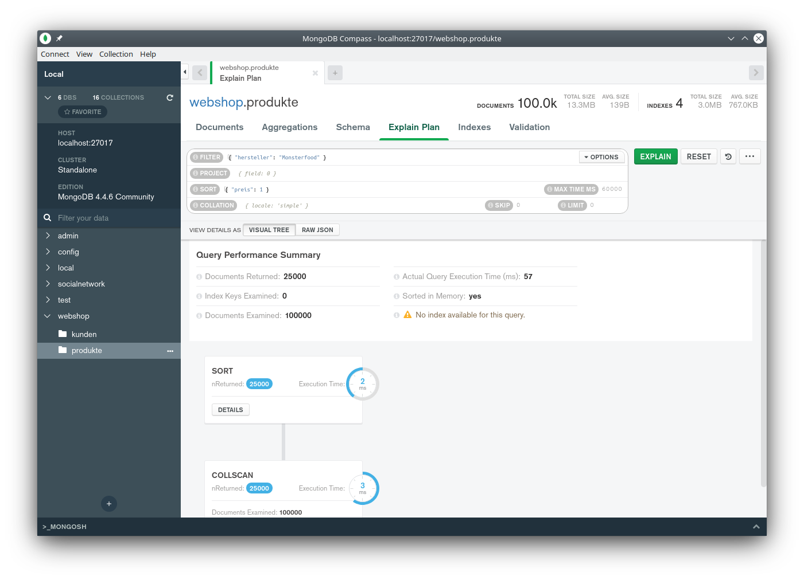
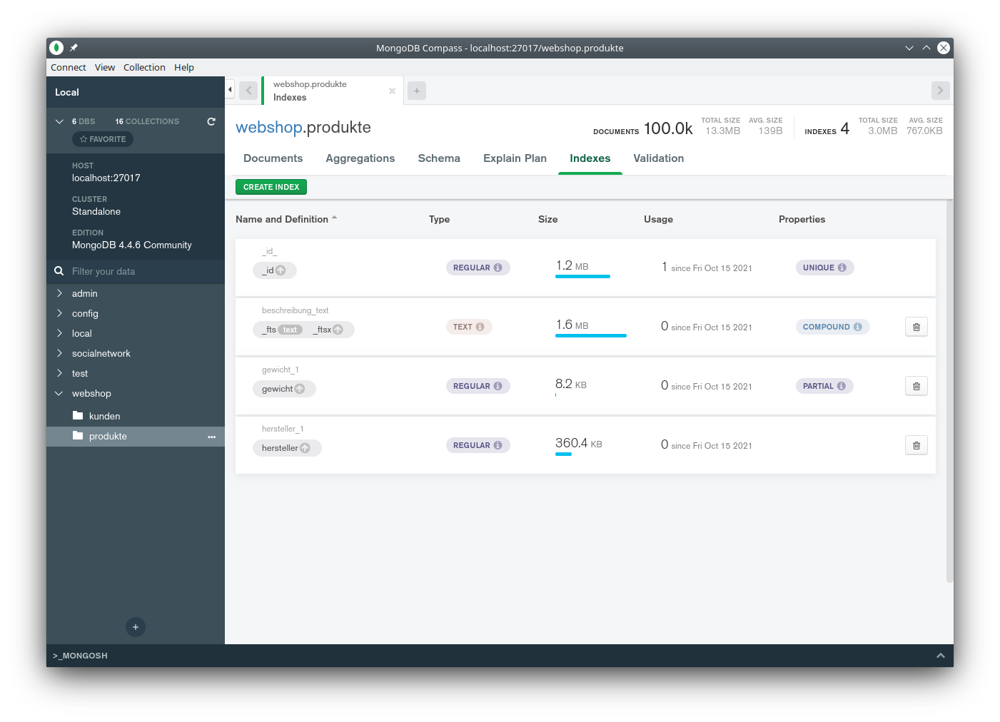

Prof. Dr.-Ing. Johannes Schildgen
johannes.schildgen@oth-regensburg.de
NoSQL-Datenbanken
Kapitel 3: Performance
Anfragepläne, Indexe, Monitoring, Profiling


Anfragepläne
Eingabe: Query
db.produkte.find({"preis": { "$lt": NumberDecimal("1") }})1. Anfragepläne generieren
Plan A
Plan B
Plan C
2. Besten Plan auswählen
Plan C
3. Plan ausführen
explain
db.produkte.explain().find({"preis": { "$lt": NumberDecimal("1") }}){
"queryPlanner" : {
"namespace" : "webshop.produkte",
// ...
"winningPlan" : {
"stage" : "COLLSCAN",
"filter" : {
"preis" : {
"$lt" : NumberDecimal("1")
}
},
"direction" : "forward"
},
"rejectedPlans" : [ ],
// ...
"ok" : 1
}Ausführungsstatistiken
explain() führt die Anfrage nicht wirklich aus,explain("executionStats") schon.
db.produkte.explain("executionStats")
.find({"preis": { "$lt": NumberDecimal("1") }}){
// ...
"executionStats" : {
"executionSuccess" : true,
"nReturned" : 99,
"executionTimeMillis" : 79,
"totalKeysExamined" : 0,
"totalDocsExamined" : 100000,
"executionStages" : {
"stage" : "COLLSCAN",
// ...
}
}COLLSCAN - Collection Scan
Prüfe Dokument für Dokument ob der Preis kleiner als 1 EUR ist:
{ "_id": 1, "bezeichnung": "...", "preis": NumberDecimal("1.89"){ "_id": 2, "bezeichnung": "...", "preis": NumberDecimal("2.17"){ "_id": 3, "bezeichnung": "...", "preis": NumberDecimal("2.22"){ "_id": 4, "bezeichnung": "...", "preis": NumberDecimal("5.55"){ "_id": 5, "bezeichnung": "...", "preis": NumberDecimal("8.95"){ "_id": 6, "bezeichnung": "...", "preis": NumberDecimal("0.89"){ "_id": 7, "bezeichnung": "...", "preis": NumberDecimal("1.79"){ "_id": 8, "bezeichnung": "...", "preis": NumberDecimal("0.50")Collection-Scan auf BSON
db.personen.find({"name":"Ulrike"}){"_id":1, "name":"Franka", "geboren":2000 }
Länge
44
Typ
16
Feld
_id\0
Wert
1
Typ
2
Feld
name\0
Länge
7
Wert
Franka\0
Typ
16
Feld
geboren\0
Wert
2000
EOD
\0
Bytes: 4 1 4 4 1 5 4 7 1 8 4 1
Soso, das erste Attribut ist also eine Zahl. Zahlen vom Typ 16 haben Länge 4 Byte.
Das Attribut heißt _id? Interessiert mich nicht. Ich springe drüber. Ich springe 4 Byte nach rechts.
Hier springe ich hin. Das nächste Attribut ist also ein String variabler Länge.
Juhu, es heißt "name".
Jetzt lese ich 7 Zeichen. Schade, nicht "Ulrike" sondern "Franka".
Den Rest des Dokuments (44-30=14 Bytes) kann ich überspringen.
Explain-Pläne in MongoDB Compass
Indexe
Ein Index auf einem Feld beschleunigt Suchen und verhindert Collection-Scans.
Index auf dem _id-Feld (Standard)
db.produkte.getIndexes()[ { "v" : 2, "key" : { "_id" : 1 }, "name" : "_id_" } ]
Index-Scan
db.produkte.explain("executionStats").find({"_id":12345}){
// ...
"totalDocsExamined" : 1,
// ...
}Index anlegen
db.produkte.createIndex({"preis":1})// Kann genutzt werden z. B. bei:
db.produkte.find({"preis": { "$lt": NumberDecimal("1") }})
db.produkte.find().sort({"preis":-1})Mehrdimensionale Indexe
db.produkte.createIndex({"hersteller":1, "preis":1})// Kann genutzt werden z. B. bei:
db.produkte.find({"hersteller": "Monsterfood"});
db.produkte.find().sort({"hersteller":1});
db.produkte.find({"hersteller": "Monsterfood",
"preis": { "$lt": NumberDecimal("1") }});
db.produkte.find({"hersteller": "Monsterfood"}).sort({"preis":-1});Covered Query
Kann rein mit dem Index beantwortet werden, ohne in die Collection zu schauen.
Dazu müssen alle Felder in der Selektion und Projektion Teil eines Indexes sein.
db.produkte.createIndex({"hersteller":1, "preis":1})db.produkte.find({"hersteller": "Monsterfood",
"preis": { "$lt": NumberDecimal("1") }},
{"preis": 1, "_id":0});Im Anfrageplan:"stage" : "PROJECTION_COVERED"
Index-Nutzung bei der Präfix-Suche
// Produkte, deren Hersteller mit M beginnen:
db.produkte.find({"hersteller": {$regex: /^M/}})"winningPlan" : {
"stage" : "FETCH",
"inputStage" : {
"stage" : "IXSCAN",
"indexName" : "hersteller_1_preis_1",
// ...
"indexBounds" : {
"hersteller" : [
"[\"M\", \"N\")",
"[/^M/, /^M/]"
],
"preis" : [
"[MinKey, MaxKey]"
]
}
}
}, //...
Collations: Textvergleiche
Collections bestimmen, wie Suchen und Sortieren aufs Strings erfolgen sollen.
db.produkte.createIndex({bezeichnung:1}, {collation: {
locale:"de",
strength: 1,
numericOrdering: true // "10" > "2"
} } )Strength:
| 1 | Vergleich nur auf Base-Characters, é = è = ê = e = Ê = E |
| 2 | Unterscheidung zwischen diakritischen Zeichen, e < è, e = E, è = È |
| 3 | Unterscheidung zwischen Groß- und Kleinschreibung, e < è, e < E, è < È |
Collations: Textvergleiche
Suchen
db.produkte.find( // nutzt den Index nicht, findet nichts
{bezeichnung:"Spulmaschinentabs"})db.produkte.find( // nutzt den Index, findet Spülmaschinentabs
{bezeichnung:"Spulmaschinentabs"})
.collation( { locale:"de", strength:1 } )Sortieren
db.produkte.find().collation( { locale:"de", strength:1 } )
.sort({bezeichnung:1}).limit(5) // nutzt den IndexDefault-Collation für eine Collection
db.createCollection("produkte", {collation: { ... } )text-Indexe
db.produkte.createIndex({ beschreibung: "text" },
{ default_language: "de" })Es darf pro Collection höchstens einen Text-Index geben,
ein zusammengesetzter über mehrere Felder ist aber erlaubt:
db.produkte.createIndex({ bezeichnung: "text", beschreibung: "text" })Wildcard-Text-Index (über alle String-Felder):
db.collection.createIndex( { "$**": "text" } )text-Indexe
- Tokenization: Strings werden in Wörter zerlegt (Case-insensitive)
- Sprach-spezifische Stop-Word-Elimination
- Sprach-spezifisches Suffix-Stemming (Reduktion auf Wort-Stamm)
Beispiel: { "beschreibung": "Ein sehr gutes Produkt" }
Tokenization
"ein", "sehr",
"gutes", "produkt"
Stop-Word-Elimination
"gutes",
"produkt"
Stemming
"gut",
"produkt"
$text-Suche
$text durchsucht alle Felder, auf denen ein Text-Index definiert ist.
db.produkte.find( { $text: { $search: "die guten Sachen" } } )"winningPlan" : {
"stage" : "TEXT",
"indexPrefix" : {
},
"indexName" : "beschreibung_text",
"parsedTextQuery" : {
"terms" : [
"gut",
"sach"
],
"negatedTerms" : [ ],
"phrases" : [ ],
"negatedPhrases" : [ ]
},
"textIndexVersion" : 3,
// ...
}Text-Score
db.produkte.find( { $text: { $search: "die guten Produkte" } },
{ score: { $meta: "textScore" } } ){ "_id" : 1532, ..., "beschreibung" : "Eher schlechtes Produkt", "score" : 0.6666666666666666 }
{ "_id" : 82045, ..., "beschreibung" : "Ein sehr gutes Produkt", "score" : 1.5 }
Sortieren nach dem Text-Score (absteigend)
db.produkte.find( { $text: { $search: "die guten Produkte" } } )
.sort( { score: { $meta: "textScore" } } )Indexe auf Subattributen und Arrays
db.kunden.createIndex({"geboren.jahr":1})Multi-Key-Indexe
db.produkte.createIndex({"kategorien":1})Sobald es Array-Werte gibt, legt MongoDB einen Multi-Key-Index an
⇒ Ein Eintrag im Index für jedes Element im Array
Sparse und partielle Indexe
Sparse Index
... indiziert nur Dokumente, bei denen es das Feld auch wirklich gibt:
db.produkte.createIndex({verlag:1}, {sparse:true})Partieller Index
... indiziert nur Dokumente, die ein bestimmtes Kriterium erfüllen:
db.produkte.createIndex({gewicht:1},
{partialFilterExpression:{kategorie:"Lebensmittel"}})Unique- und Hashed-Indexe
Unique-Index
... passt auf, dass jeder Wert in der Collection nur einmal vorkommt:
db.kunden.createIndex({email:1}, {unique:true})Hashed-Index
... trägt nicht die Werte sondern Ergebnisse einer Hash-Funktion in den Index ein:
db.kunden.createIndex({email:"hashed"})$h('peter@example.com') = 1510671575292898645$
TTL-Indexe - Time To Live
Dokument wird automatisch gelöscht, wennlastModifiedDate < jetzt - expireAfterSeconds
db.warenkorb.createIndex( { "lastModifiedDate": 1 },
{ expireAfterSeconds: 86400 } )Geodaten und Geo-Indexe
// longitude, latitude
{"_id": 6, "name": "Ute", "coord": [12.095089, 49.003674]}
db.kunden.createIndex( { coord: "2dsphere" } )GeoJSON
GeoJSON-Objekt-Typen: Point, LineString, Polygon, ...
{
_id: 5, name: "Peter", coord: {
type: "Point",
coordinates: [12.11595, 49.026222]
}
}
Anfragen auf Geodaten
$near: Umkreissuche
db.kunden.find( { "coord": { $near : {
$geometry: { type: "Point", coordinates: [12.0904, 48.9878]},
$maxDistance: 2000 /* 2km */
} } } )$geoWithin
db.kunden.find( { "coord": { $geoWithin : {
$geometry: { type: "Polygon", coordinates:
[[ [6, 55], [15, 55], [15, 47],
[6, 47], [6, 55] ]]},
} } } )Indexe droppen oder verstecken
db.produkte.dropIndex("gewicht_1"); // über den Index-Namen
db.produkte.dropIndex({"verlag":1}); // oder wie er spezifiziert wurdeHidden Index
... ist zwar da, wird aber nicht bei Query-Ausführungen genutzt:
db.produkte.createIndex({"hersteller":1}, {"hidden":true})db.produkte.hideIndex({"hersteller":1})db.produkte.unhideIndex({"hersteller":1})Indexe in MongoDB Compass
Monitoring
mongostat
Überblick über den Status der MongoDB-Instanz
insert query update delete getmore command dirty used flushes
*0 *0 *1 *0 0 5|0 0.4% 0.5% 0
vsize res qrw arw net_in net_out conn time
1.48G 148M 0|0 1|0 157b 84.2k 17 Oct 15 06:47:08.811Im Moment ...
- ... läuft eine Update-Query
- ... konsumiert MongoDB 148 MB RAM
- ... wartet kein Client aufs Lesen (
qr) oder Schreiben (qw) - ... ist ein Client aktiv beim Lesen (
ar), keiner beim Schreiben (aw) - ... sind 17 Clients verbunden
Monitoring
mongotop [n]
Wie lange hat MongoDB in den letzten n Sekunden mit Lesen/Schreiben verbracht?
Standardmäßig n = 1 (jede Sekunde)
ns total read write
webshop.produkte 900ms 0ms 900ms
admin.system.roles 0ms 0ms 0ms
admin.system.version 0ms 0ms 0ms
config.collections 0ms 0ms 0ms
config.system.sessions 0ms 0ms 0ms
config.transactions 0ms 0ms 0ms
local.system.replset 0ms 0ms 0msMonitoring
db.currentOp()
Zeigt aktuell laufende Operationen an.
db.killOp(32324)
Killt eine laufende Operation.
{
"inprog" : [
{
"type" : "op",
"host" : "jotebook:27017",
// ...
"opid" : 32324,
"op" : "update",
"ns" : "webshop.produkte",
"command" : {
"q" : {
},
"u" : {
"$inc" : {
"preis" : 0.1
//...Profiling
Sammelt Infos über ausgeführte Queries in der Collection system.profile
Profiling-Levels
| 0 | Profiling ist ausgeschaltet (Standard) |
|---|---|
| 1 | Der Profiler sammelt Daten über Operationen, die länger als slowms Millisekunden dauern |
| 2 | Der Profiler sammelt Daten über alle Operationen |
$ mongod --profile 1 --slowms 30> db.setProfilingLevel(2)
> db.setProfilingLevel(1, { slowms: 30 })
> db.getProfilingStatus()
{ "was" : 1, "slowms" : 30, "sampleRate" : 1 }
Profiling
db.system.profile.find().pretty(){
"op" : "query",
"ns" : "webshop.produkte",
"command" : {
"find" : "produkte",
"filter" : {
"preis" : {
"$lt" : 1
}
}
},
// ...
"docsExamined" : 100000,
// ...
"nreturned" : 69,
"responseLength" : 9782,
"millis" : 98,
"execStats" : { ... },
"ts" : ISODate("2021-10-15T05:29:14.378Z")
}Capped Collections
- Collection mit angegebener Maximalgröße
- Ermöglicht schnelle Einfügungen
- Voll? Ältestes Dokument wird gelöscht.
db.createCollection("Wetterdaten",
{ capped:true, size:1024*1024} })db.system.profile ist eine Capped Collection.
WiredTiger (Storage-Engine)
Document-Level-Concurrency
Clients können gleichzeitig verschiedene Dokumenten modifizieren.
Seit MongoDB 4 werden aber auch Multi-Document-Transactions unterstützt.
Journaling
Änderungen ins Journal-Log schreiben, um Dauerhaftigkeit zu gewährleisten.
Kompression
WiredTiger nutzt Kompression, sodass mehr Daten in den RAM passen.
snappy(Standard-Kompressionslibrary): schnelllzip: höherer Kompressionsgradzstd: noch höherer Kompressionsgradnone
In-Memory-Storage-Engine
$ mongod --storageEngine inMemory- Nur verfügbar in MongoDB Enterprise
- Datenbank (Collections, Indexe, ...) muss in den RAM passen
- Kein Journaling
- Beim Shutdown oder Crash sind alle Daten weg
- Sinnvoll bei Replikation: z. B. 1 Knoten WiredTiger + 2 Knoten InMemory
Zusammenfassung
- Anfragepläne:
explain(),explain("executionStats") - Collection-Scan vs. Index-Scan
- Indexe: Mehrdimensional, Multi-Key-Index,
$text, sparse, partielle Indexe, Unique, Hashed, Hidden, TTL, Geo-Index - Collations
- Monitoring:
mongostat,mongotop,db.currentOp(),db.killOp - Profiling
- Storage-Engines: WiredTiger, In-Memory